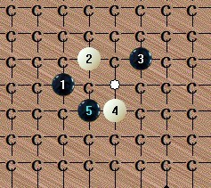
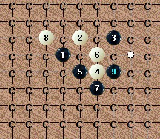

求教峡月刀一个4的6手后不会杀
#1 求教峡月刀一个4的6手后不会杀 作者：侯军学棋 发表时间：2012-11-6 10:28:35
谢谢［此帖子已被 侯军学棋 在 2012-11-6 10:29:09 编辑过］
［此帖子已被 侯军学棋 在 2012-11-6 10:46:58 编辑过］
［ 郎情 于 2012-11-6 19:35:10 时花20金币送鲜花一朵］
［ 郎情 于 2012-11-6 19:35:10 时花20金币送鲜花一朵］
［ 郎情 于 2012-11-6 19:35:10 时花20金币送鲜花一朵］
#2 Re:求教峡月刀一个4的6手后不会杀 作者：日月丽天 发表时间：2012-11-6 10:53:42
去年看过好多次，想杀必胜后面难度巨大，欣慰的是恒星刀上这样的马步卦四却能先地毯出来
#3 Re:求教峡月刀一个4的6手后不会杀 作者：小小亦默 发表时间：2012-11-8 1:33:32
无图#4 Re:求教峡月刀一个4的6手后不会杀 作者：日月丽天 发表时间：2012-11-8 16:04:11
终极不掉，大峡月不属于必胜刀，目前有3个4可以下